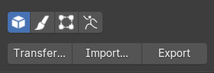
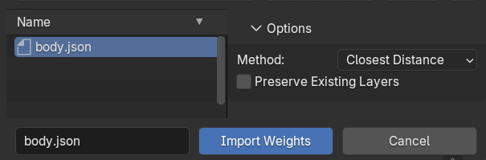

Object Mode Tools¶

Weight Transfer¶
Weight transfer supports any number of source and target meshes. It can be used in various ways, such as:
1) Transfer weights from the body to clothing and accessories¶

How to use:
- Add both the body and clothing to the Transfer list.
- Mark the body mesh as Source.
- Click Transfer Weight.
2) Transfer weights from multiple meshes¶

How to use:
- Add the source meshes and the target mesh to the Transfer list.
- Mark the relevant meshes as Source.
- Click Transfer Weight.
3) And much more, as shown in the video¶
Other Transfer Options:
-
You can restrict the transfer to specific source or target areas by enabling the Use Selected Vertices Only toggle (the selection must exist in Edit Mode). A source selection can be faces, edges, or single vertices.
-
If the target already has a layer system, the output will be added as a new layer named "Transfer Output".
-
Enabling the Force Target to Init Layer checkbox forces layer data initialization for all target meshes if they are still using native vertex groups.
Armature Parenting
Target meshes do not need to be parented to an armature beforehand, as the tool will automatically parent them during the transfer. However, the source mesh must always be parented to an armature first.
Weight Export¶
Export all layer data and skin weights from a selected mesh to a file.
How to use:
- Select the mesh you want to export layer data from.
- Click Export Weights.
Weight Import¶

How to use:
- Select the target mesh you want to import weights to.
- Click Import Weights.
Options:
- Transfer Method: Choose a weight transfer method during import, such as Closest Distance or Vertex ID.
- Preserve Existing Layers: Check this option to keep current layers on the mesh. (This option only appears if the target mesh already has layer data.)